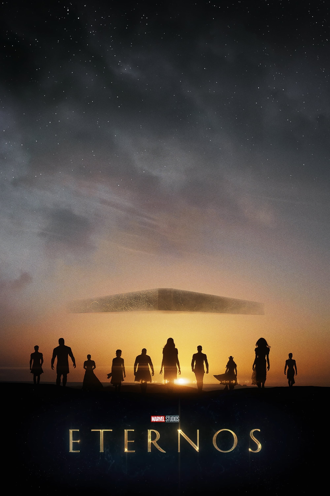
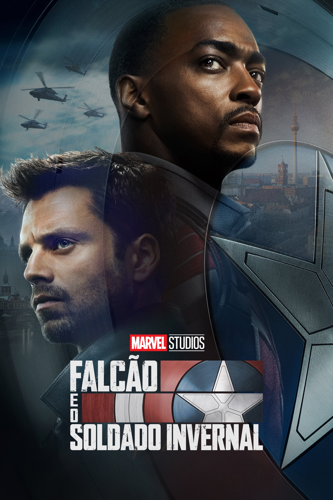
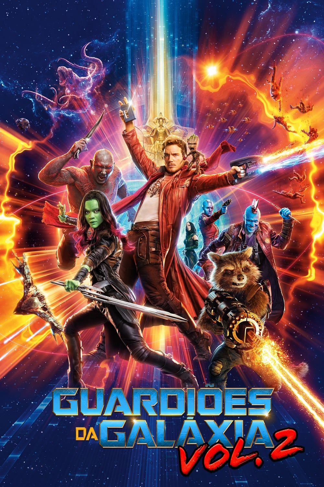

HEROFLIX
LOKI
Começando imediatamente depois que Loki rouba o Tesseract (de novo), ele se encontra diante da Autoridade de Variação Temporal, uma organização burocrática que existe fora do tempo e espaço.





